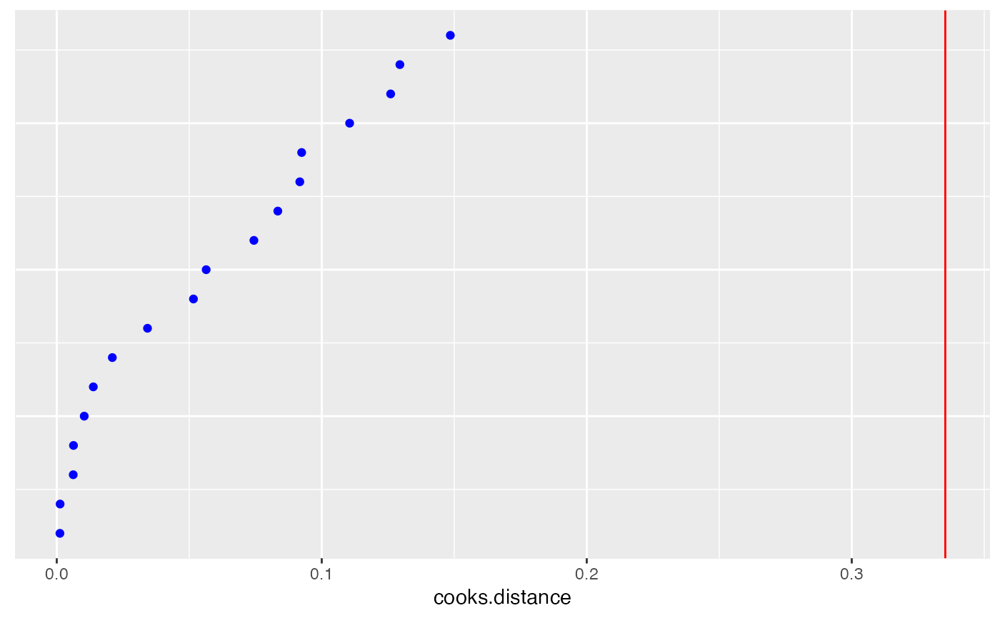

This is a function that can be used to create (modified) dotplots for the diagnostic measures. The plot allows the user to understand the distribution of the diagnostic measure and visually identify unusual cases.
dotplot_diag( x, cutoff, name = c("cooks.distance", "mdffits", "covratio", "covtrace", "rvc", "leverage"), data, index = NULL, modify = FALSE, ... )
Arguments
| x | values of the diagnostic of interest |
|---|---|
| cutoff | value(s) specifying the boundary for unusual values of the
diagnostic. The cutoff(s) can either be supplied by the user, or automatically
calculated using measures of internal scaling if |
| name | what diagnostic is being plotted
(one of |
| data | data frame to use (optional) |
| index | optional parameter to specify index (IDs) of |
| modify | specifies the |
| ... | other arguments to be passed to |
Note
The resulting plot uses coord_flip to rotate the plot, so when
adding customized axis labels you will need to flip the names
between the x and y axes.
Examples
data(sleepstudy, package = 'lme4') fm <- lme4::lmer(Reaction ~ Days + (Days | Subject), sleepstudy) #Observation level deletion and diagnostics obs.infl <- hlm_influence(fm, level = 1) dotplot_diag(x = obs.infl$cooksd, cutoff = "internal", name = "cooks.distance", modify = FALSE)dotplot_diag(x = obs.infl$mdffits, cutoff = "internal", name = "cooks.distance", modify = FALSE)# Subject level deletion and diagnostics subject.infl <- hlm_influence(fm, level = "Subject") dotplot_diag(x = subject.infl$cooksd, cutoff = "internal", name = "cooks.distance", modify = FALSE)dotplot_diag(x = subject.infl$mdffits, cutoff = "internal", name = "mdffits", modify = "dotplot")